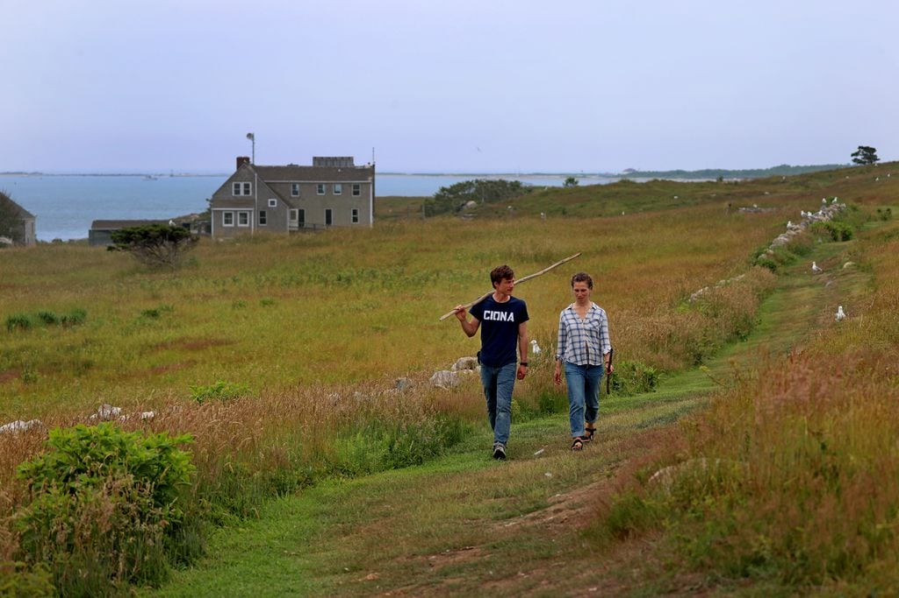
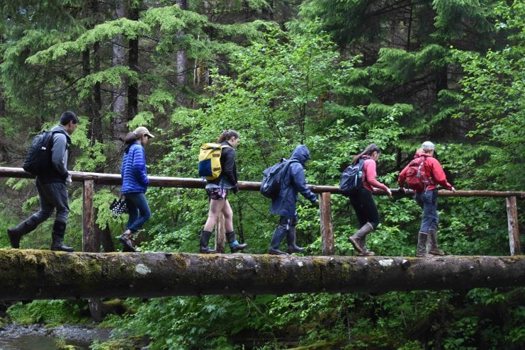
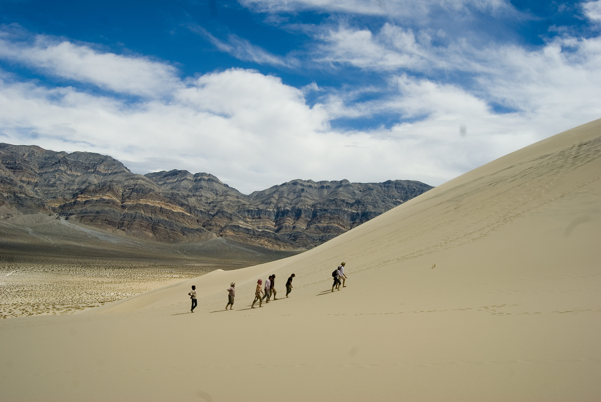
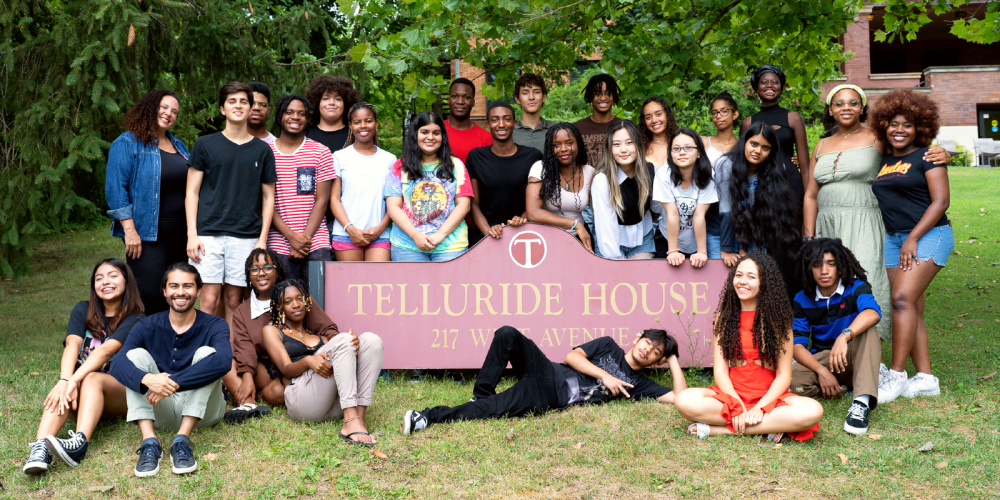
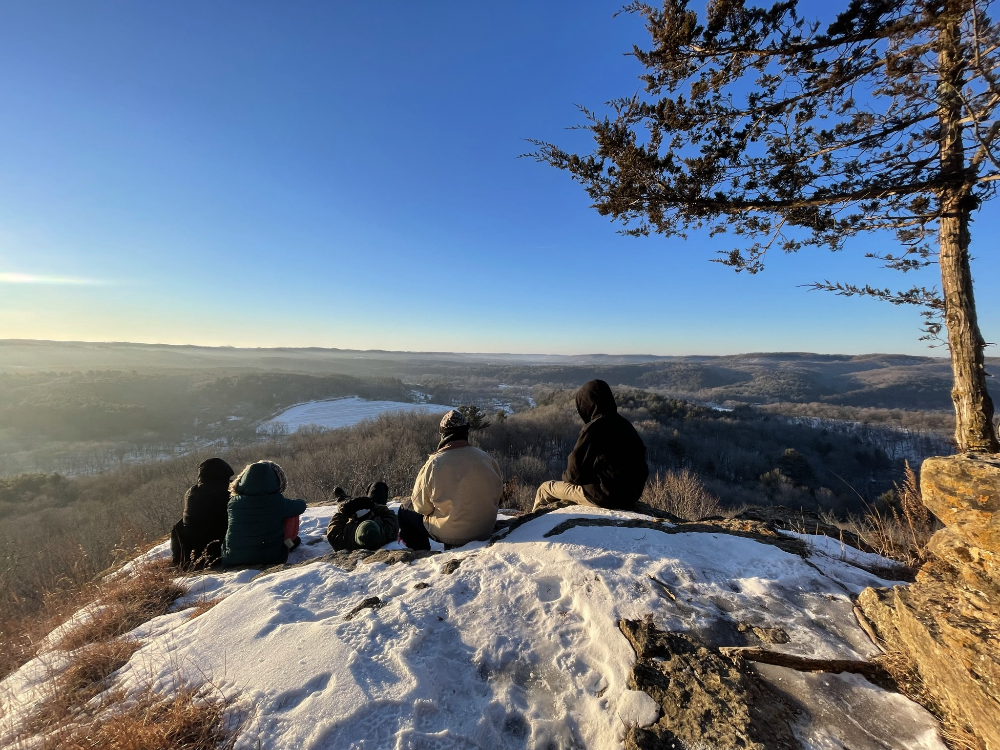
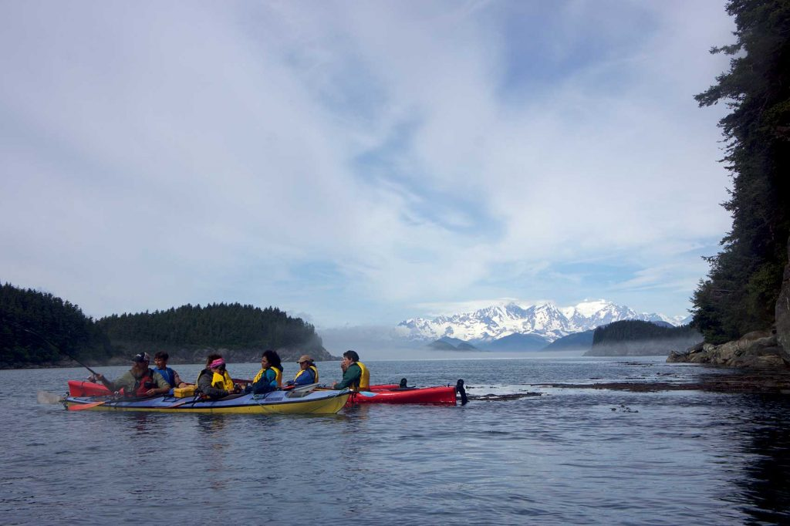

The Institute runs a free, month-long “open-application” program in May through June for a cohort of advanced undergraduates (rising juniors, seniors, and recent graduates) on islands in Buzzards Bay, Massachusetts. Learn more at gullisland.org. The Gull Island Institute was founded in 2022 to reimagine liberal arts education for an era of climate change. The Institute’s approach to the “Nunnian Pillars” reflects distinctive features of its location as well as mission. Seminar is the focus of the Open Application program: meeting daily in textual study as well as the history and ecology of the islands, students and faculty from the humanities, social natural sciences, local community and Tribal leaders grapple with a central question: “What makes this place habitable, and what does it mean to inhabit it well?” Labor involves management of wildlife sanctuaries and work on a sustainable oyster farm on Cuttyhunk Island. Through self-governance, students set conditions of their collective life and develop their own academic assignments; alumni serve organizational roles within the Institute and as members of an Application Committee that selects the next year’s cohort. Beyond Buzzards Bay, the Institute seeds Nunnian-inspired education at a range of public and private universities, guided by a conviction that three-pillared place-based learning provides vital resources for all liberal arts educators seeking to advance students’ understanding of humanity’s place within the Earth’s life-sustaining systems and capacities to act on that knowledge.
Since 2015, Outer Coast has been methodically laying the foundation to launch a two-year liberal arts college in Sitka, Alaska, which they plan to open in the fall of 2024. Outer Coast runs a two-semester postsecondary program from August to May for high school graduates and a summer seminar program for high school students in July and August. You can learn more at outercoast.org. Outer Coast was founded in 2015 on Lingít Aaní, the land of the Tlingit people, with the mission to teach and inspire young people to create virtuous change in the world and in their own lives by offering a liberal arts education grounded in Western and Indigenous ways of learning, knowing, and being. Outer Coast serves a student body that is national and international in breadth and diverse in many ways, including across racial, ethnic, cultural, and gender identities, and socioeconomic status. Outer Coast emphasizes reaching students from across Alaska, particularly Alaska Natives and rural Alaskans, as well as other high-potential students from backgrounds underrepresented and underserved in American higher education. Outer Coast creates pathways for students historically to unlock the promise of higher education: empowering young people whose talents could go unrealized, bridging the gap between high school and four-year institutions that match students’ potential, serving as a launchpad for their educational and career aspirations, and giving them the tools and purpose to transform their own lives, their communities, and the broader world. Inspired in part by Deep Springs, Outer Coast is founded on the pillars of Academics, Service & Labor, and Self-Governance, through which students gain the necessary skills, tools, and mindsets to not only pursue meaningful lives for themselves but to effect virtuous change.
Founded in 1917, Deep Springs College is a unique institution of higher learning. The educational program is built upon three pillars: academics, student self-government, and manual labor. The school is located forty miles from Bishop, California on an isolated cattle ranch in Deep Springs Valley. Between twelve and fifteen students are admitted each year. Each receives a full scholarship; the college covers the costs of tuition, room, and board for every student offered admission. In exchange, Deep Springs students are expected to dedicate themselves to lives of service to humanity. Alumni have gone on to exemplify this ideal in a variety of fields, including politics, science, journalism, academics, agriculture, medicine, law, business, and design. The three pillars, which comprise students’ formal responsibilities in their two years at the college, prompt each student to take real responsibility for and ownership of the community. Students are expected to bring a high level of preparation and engagement to their classes, which are generally constructed around seminar-style discussion and often have fewer than eight participants. The Student Body is responsible for many aspects of running the College, admitting students, hiring faculty, and reviewing student and faculty performance. Each student also labors roughly twenty hours each week. Labor positions include working on the farm and ranch, as well as daily tasks of cooking, cleaning, and maintaining facilities and vehicles.
The Telluride Association Summer Seminar (TASS) is a free 6-week residential summer program for high school sophomores and juniors. Participants take college-level courses in Critical Black Studies and Anti-Oppressive Studies while building a self-governing community. TASS currently includes programs at Cornell University, the University of Michigan, and the University of Maryland. The Cornell Branch of Telluride Association (CBTA) admits undergraduates, graduate students, and faculty guests from Cornell to live together in the Telluride House on the Cornell University campus. The Cornell Branch provides free room and board to all members. The Michigan Branch of Telluride Association (MBTA) admits undergraduates, graduate students, and faculty guests from the University of Michigan to live together near the U of M campus. As part of their self-governance, Michigan Branch members plan and carry out an annual service project. The Michigan Branch provides free room and board to all members. Telluride Association also offers awards and scholarships, including the Yarrow Award for adventurous education, the Reese Miller award for first-generation college students, the Mansfield-Wefald senior thesis prize, and the TASS Alumni Development and Support scholarship. Telluride Association (TA) is an educational nonprofit founded in 1911 by L.L. Nunn. Its mission is to create free educational programs that challenge young people to build community, learn together, and make democratic decisions in order to think critically about the world and create a more just society. It is overseen by a board of 60+ members, primarily early-career alumni from Telluridian and Nunnian programs. You can learn more at tellurideassociation.org.
Thoreau College offers a variety of different programs incorporating academics, labor, community, art, and nature. These programs include fall gap semester programs, yearlong guided internships, and a variety of short programs focused on homesteading skills and sustainable agriculture, theater arts, folk arts and crafts, and wilderness expeditions. Learn more at thoreaucollege.org. Singing and movement arts, shared meals and celebrations, seminar-style discussions of works of literature, ecology, religion, and philosophy, and deep immersions into the natural world through group and solo hiking, canoeing, and foraging experiences are all important parts of being a student at Thoreau College. In addition, students participate in running a small farm raising sheep, pigs, chickens, grapes, apples, and vegetables. Program participants are integrated into the cultural and community life of Viroqua, Wisconsin, a vibrant rural town of 4,500 people, noted for its arts, alternative education and medicine, and high quality food. The surrounding unglaciated “Driftless Region” is one of the major hotbeds of organic, regenerative, and biodynamic agriculture in the United States, a fact which has a major influence on the curriculum and activities of the college. Thoreau College was founded by Deep Springs alumnus Jacob Hundt and also draws inspiration from the Waldorf school movement, from the Danish folk school tradition, and the writings of American transcendentalist Henry David Thoreau. To learn more, visit www.thoreaucollege.org and check out the Thoreau College podcast, called “Microcollege,” for interviews about Thoreau College, Deep Springs, and many other humanly scaled experiments in higher education. 
Students ages 18-23 are invited to apply to the Glacier Bay Semester, an 18-week program based out of Tidelines’ twin campuses along Alaska’s Inside Passage. Students may enroll in the program as a “study away” semester or as part of a gap year experience. A full semester’s worth of college credit is available, as is financial aid. Learn more at tidelinesinstitute.org Robert Heinlein once wrote that “specialization is for insects.” We agree. In a world facing unprecedented crises – of democracy and justice, climate and environment, meaning and purpose – we need leaders who can think and act beyond the silos into which higher education so quickly shuts us. At Tidelines Institute, you’ll learn how to deliver a speech and splint an ankle, paddle a kayak and run a meeting, build a shed and parse a text, catch a wild salmon, test a hypothesis, and build community. But beyond these skills, you will learn to think deeply, creatively, and empathetically about some of the greatest challenges that face our society in the years to come. These varied modes of human thought and action you will experience through the three pillars of our Glacier Bay Semester, modeled off of Deep Springs College: rigorous intellectual work across the liberal arts and sciences, the labor of a working Alaskan homestead, and student democratic self-governance. Don’t be satisfied with an education that prepares you for life of cubicles and creature comforts. The world needs to change, and changing the world is hard work. If that’s your calling, the Glacier Bay Semester is for you.
